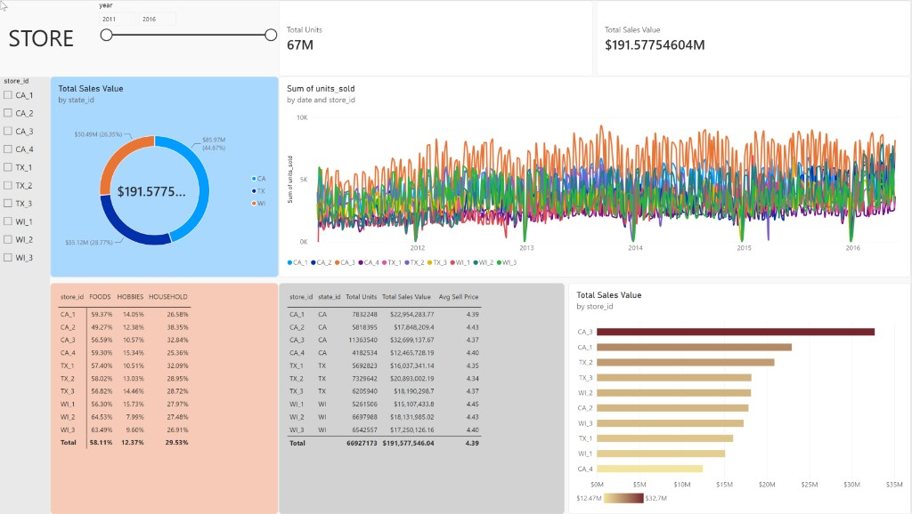

Total Units
66.9M
Exact 66,927,173
Analysis of the Power BI Store page against
data/gold_export/
(agg_daily_store_sales, agg_store_category_sales,
dim_store, dim_date).
Full 33-measure catalogue lives on 08 Executive. Store page uses these measures (paste-ready):
/* Cards + bar + summary */ Total Units = SUM ( 'agg_daily_store_sales'[units_sold] ) Total Sales Value = SUM ( 'agg_daily_store_sales'[sales_value] ) Avg Sell Price = AVERAGE ( 'agg_daily_store_sales'[avg_sell_price] ) /* Matrix — category share (format %) */ Category Share = AVERAGE ( 'agg_store_category_sales'[category_sales_share] )
Line chart on this page typically uses the column
agg_daily_store_sales[units_sold] (Sum) with Legend
store_id — not a separate measure.
| Measure / field | Visual | Format |
|---|---|---|
[Total Units] | Card, summary table | Whole number |
[Total Sales Value] | Card, donut, bar, table | Currency $ |
[Avg Sell Price] | Summary table | Currency $ |
[Category Share] | Matrix values | Percentage |
units_sold (column) | Line Y-axis | Sum |
Power BI page STORE after layout polish: year + store slicers, state donut, daily units-by-store line, category share matrix (no bogus 33% column), store summary table, and store ranking bar. Sales card still needs tighter currency formatting (see §4).

| Dashboard visual | Gold source | Validation |
|---|---|---|
| KPI cards | agg_daily_store_sales |
67M units · $191.58M sales |
| Donut by state | dim_store[state_id] + [Total Sales Value] |
CA $85.97M (44.9%) · TX $55.12M (28.8%) · WI $50.49M (26.4%) |
| Store ranking bar | dim_store[store_id] + sales |
CA_3 → … → CA_4 order matches |
| Units by date × store line | agg_daily_store_sales |
Day grain fixed; use store slicer to reduce spaghetti |
| Category share matrix | agg_store_category_sales[category_sales_share] |
Per-store shares; column totals removed / total row ~58/12/30 |
| Store summary table | dims + measures | Avg price band $4.34–$4.45 |
┌──────────────────────────────────────────────────────────────┐ │ [ Year slicer ] [ Total Units ] [ Sales Value ] │ │ [ store_id slicer ] [ State donut ] [ Units by date×store ]│ │ [ Category share matrix ] [ Store summary ] [ Store ranking ]│ └──────────────────────────────────────────────────────────────┘
| Visual | Type | Fields |
|---|---|---|
| Year | Slicer | dim_date[year] |
| Store | Slicer | dim_store[store_id] or agg_daily_store_sales[store_id] |
| KPIs | Cards | [Total Units], [Total Sales Value] |
| Sales by state | Donut | Legend state_id · Values [Total Sales Value] |
| Store ranking | Clustered bar | Y store_id · X [Total Sales Value] (sort desc) |
| Daily/annual units by store | Line | X date (or year) · Legend store_id · Y units_sold |
| Category share | Matrix | Rows store_id · Columns cat_id · Values [Category Share] |
| Store summary | Table | store_id, state_id, [Total Units], [Total Sales Value], [Avg Sell Price] |
| Control | Behaviour | Analyst use |
|---|---|---|
| Year slicer | Filters all date-related visuals and measures | Isolate a full year (e.g. 2015) before comparing stores |
| store_id slicer | Multi-select filters donut, bar, line, matrix, table, cards. Set Format → Slicer settings → Selection → Multi-select with CTRL = Off so checkboxes toggle without clearing prior picks. | Compare CA_3 vs CA_4, or limit line chart to ≤3 stores |
| Donut click (state) | Cross-filters store bar, line, tables to that state | Focus CA vs TX vs WI without leaving the page |
| Bar click (store) | Highlights / filters peer visuals for one outlet | Inspect one store’s category mix and trend |
| Sync slicers | Sync year (and optionally store) with Executive / Demand | Keep time context consistent across pages |
| Edit interactions | Prefer Filter for slicers; Highlight optional for line series | Avoid blank matrix when grains conflict |
| State | Sales | Share | Units |
|---|---|---|---|
| CA | $85.97M | 44.9% | 29.2M |
| TX | $55.12M | 28.8% | 19.2M |
| WI | $50.49M | 26.4% | 18.5M |
Within California, CA_3 alone is 38% of CA sales and 17.1% of network sales ($32.70M). CA_4 is last network-wide ($12.47M). Ratio CA_3 / CA_4 = 2.62×. California contains both the best and worst stores — state label alone does not explain performance.
| Rank | Store | Units | Sales | Avg sell price* |
|---|---|---|---|---|
| 1 | CA_3 | 11.36M | $32.70M | $4.37 |
| 2 | CA_1 | 7.83M | $22.95M | $4.39 |
| 3 | TX_2 | 7.33M | $20.89M | $4.34 |
| 4 | TX_3 | 6.21M | $18.19M | $4.37 |
| 5 | WI_2 | 6.70M | $18.13M | $4.43 |
| 6 | CA_2 | 5.82M | $17.85M | $4.43 |
| 7 | WI_3 | 6.54M | $17.25M | $4.40 |
| 8 | TX_1 | 5.69M | $16.04M | $4.35 |
| 9 | WI_1 | 5.26M | $15.11M | $4.45 |
| 10 | CA_4 | 4.18M | $12.47M | $4.40 |
*Mean of daily avg_sell_price on agg_daily_store_sales.
Mean category sales share across stores: FOODS 58.1% · HOUSEHOLD 29.5% · HOBBIES 12.4%. Extremes:
Assortment differs by store, but FOODS remains the primary revenue engine everywhere — consistent with Executive category columns.
Store-level average sell prices sit in a narrow band $4.34–$4.45 (network ~$4.39). CA_3’s leadership is volume, not a higher price point. TX stores skew slightly cheaper; WI_1 is the dearest on this metric.
The units line is now at day grain (good). KPI cards and ranked totals with all years selected still include only 143 days in 2016 (through 22 May). Network average daily units rise from ~37.8K (2015) to ~41.8K (2016 YTD) — so filter to a full year when comparing store ranks for stakeholders.
date
(“Sum of units_sold by date and store_id”), not year roll-up.
store_id.
python - <<'PY'
import pandas as pd
from pathlib import Path
P = Path('data/gold_export')
s = pd.read_parquet(P/'agg_daily_store_sales.parquet')
print(s.groupby('state_id')['sales_value'].sum())
print(s.groupby('store_id')['sales_value'].sum().sort_values(ascending=False))
print(pd.read_parquet(P/'agg_store_category_sales.parquet')
.pivot_table(index='store_id', columns='cat_id', values='category_sales_share'))
PY
Screenshot:
assets/store-dashboard-page2.png.
Related: 08 Executive.
{kind=link}